Gather the ingredients.
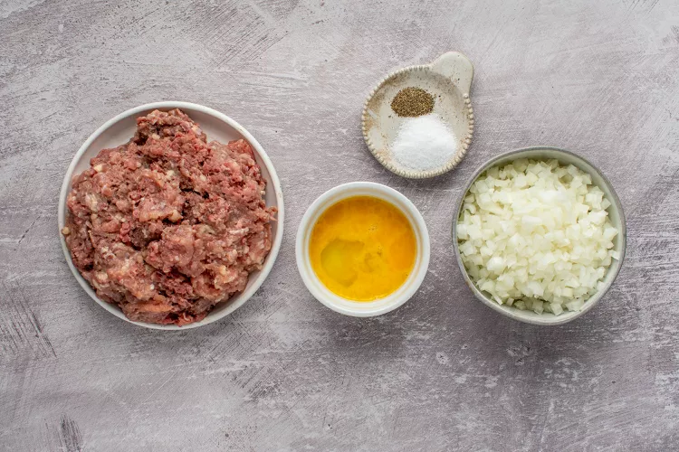In a large bowl, mix together ground meat, finely chopped onion, the salt, a few grinds of pepper, and the egg until well combined.
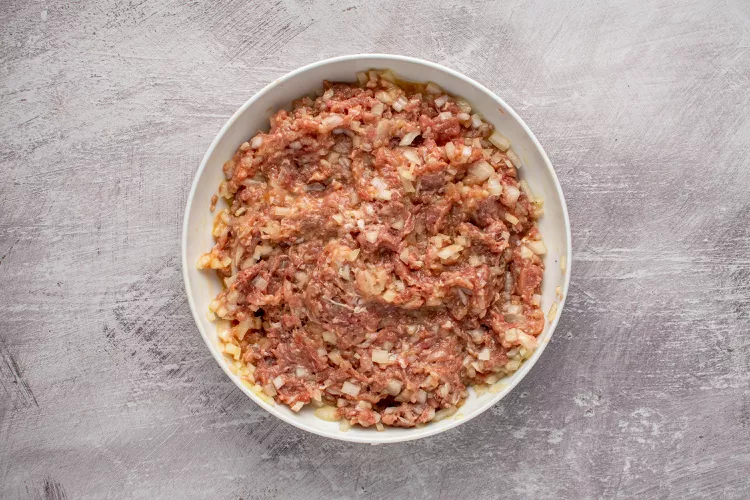Cover and refrigerate until ready to use.
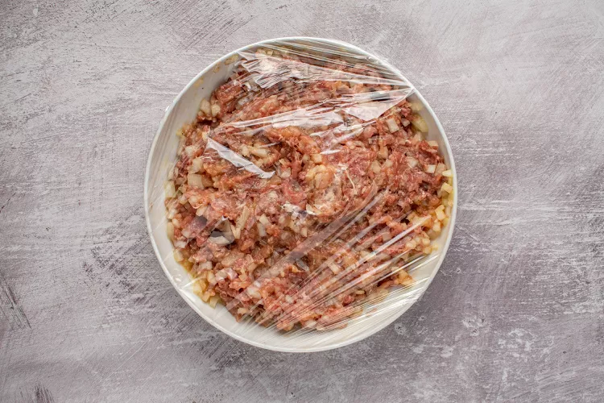
Make the Dumplings
Gather the ingredients.
Add the lemon juice to the raw grated potatoes so they don't turn brown.
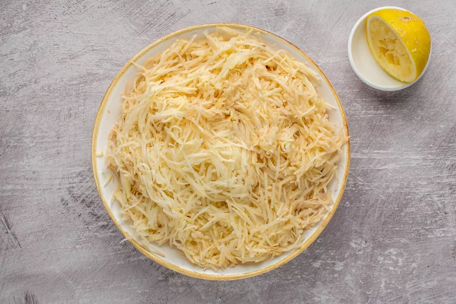Place them in a fine-mesh cheesecloth or cotton dishtowel, and twist over a large bowl to get rid of the excess water.
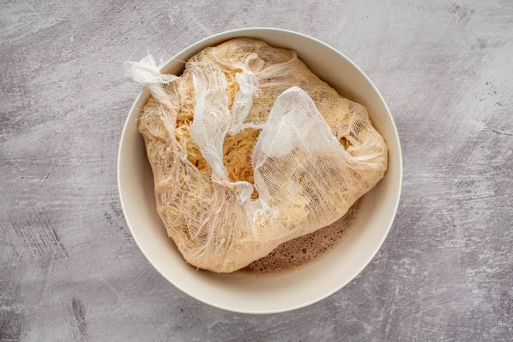Pour off the water, reserving the potato starch at the bottom of the bowl.
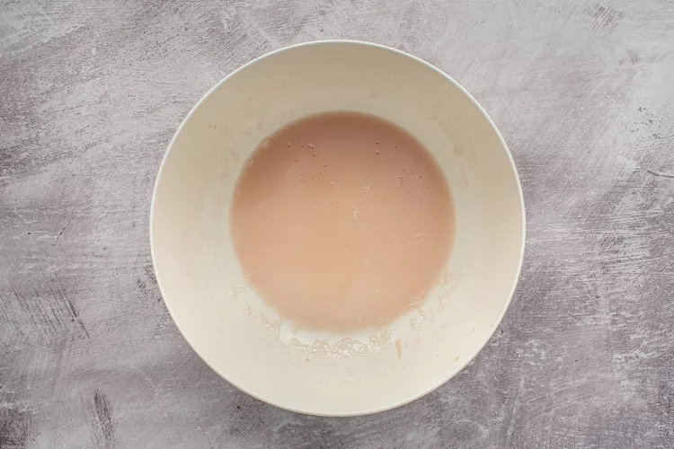Unwrap the cheesecloth and place the raw potatoes in the bowl with the potato starch you reserved from the bottom of the bowl.
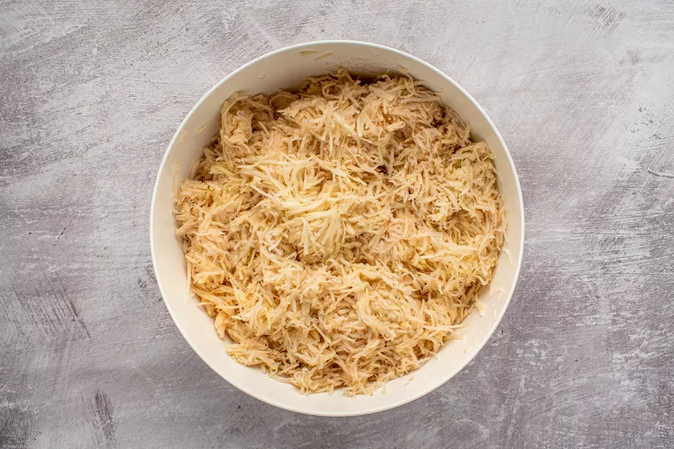Add the cooked riced potatoes, grated onion, and the salt, more to taste. Mix well.
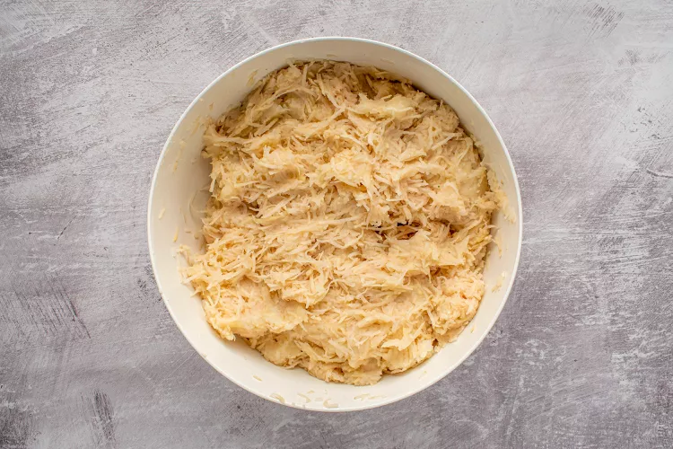Put a large stockpot of well-salted water on to boil.
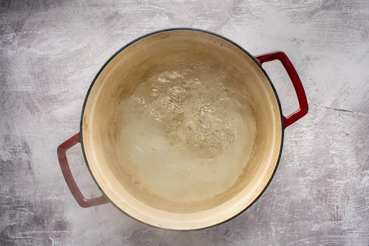To form the zeppelins, take about 1 cup of dumpling mixture and pat it flat in the palm of the hand.
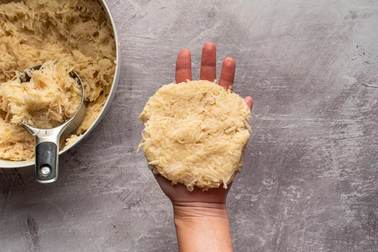Place 1/4 cup or more of meat mixture in the center and, using slightly dampened hands, fold the potato mixture around the meat into a football shape, sealing well. Continue until both mixtures are used.
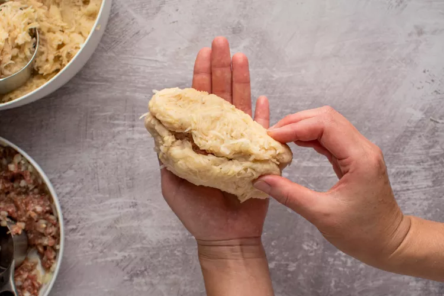
Cooking the Dumplings
Carefully lower dumplings (in batches if necessary to prevent crowding) into salted, boiling water to which 1 tablespoon of cornstarch has been added (to prevent dumplings from falling apart).
Make sure water returns to the boil; reduce the heat to low and continue simmering until the filling is cooked through, 20 to 25 minutes.
Remove dumplings with a slotted spoon or strainer, drain briefly on a clean dish towel and place on a heated platter.
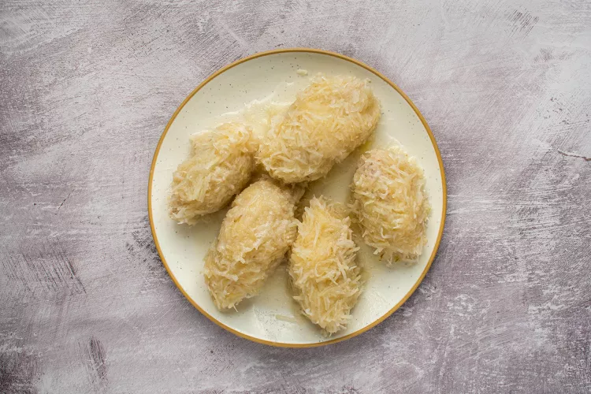
Making the Gravy
Gather the ingredients.
While the dumplings are boiling, make the gravy. In a medium skillet, fry the bacon and chopped onion until tender.
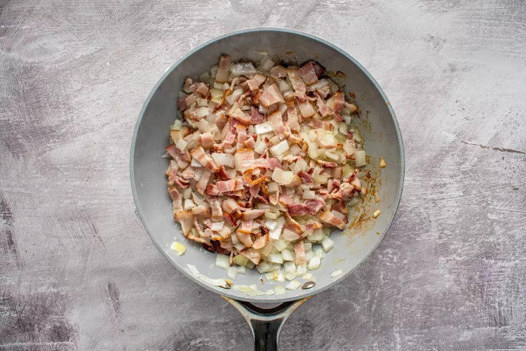Drain and combine with sour cream and black pepper. Thin with 1 to 2 tablespoons milk if necessary.
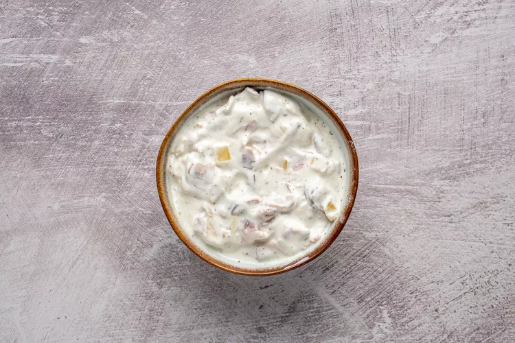Ladle the gravy over the dumplings or pass the gravy at the table.
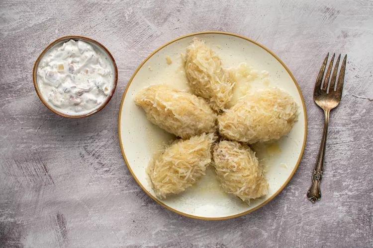